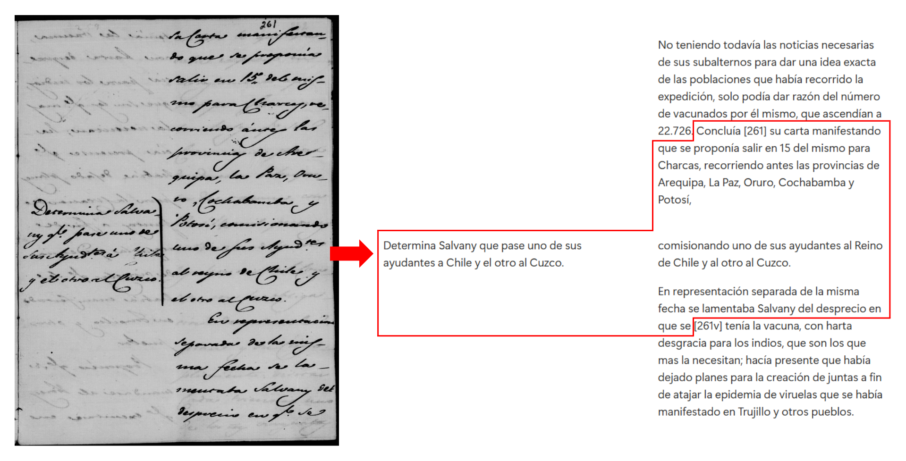
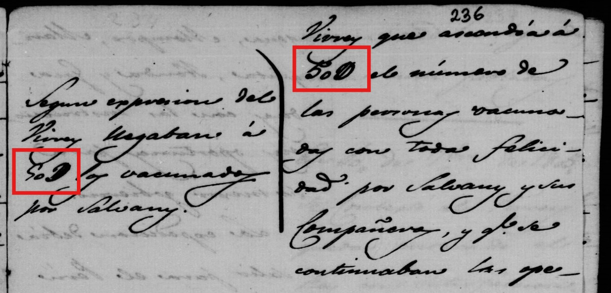

I followed these guidelines for most transcriptions, however there are some from the Indiferente 1558A that escaped them for reasons related to my workflow. All the transcriptions were done using Notion, but I did not start working with it from the beginning, nor did I think about sharing the transcriptions, so I was doing literal transcriptions in Word. Therefore, there were a few documents that escaped the normalization process, but I am still sharing them. Those are clearly signalled the databases with a Sin normalizar..
- All the abbreviations I encountered in the manuscripts have been expanded. For example, the reader will encounter febrero in my transcription wherever the document used the abbreviated version of it, Febo In some particular cases, where the abbreviations used are neither transparent nor common, the original will be preserved. An example of this would be presented in criterion number 14 (3).
- The accentuations have been normalized. Examples of this are:
- Santa Fe instead of Santa Fè
- a la ciudad instead of à la ciudad
- había instead of habia
- The archaic uses of the letters i, y, j, u, v, s, c, z, h have also been adapted to the current usage. Therefore, instead of Yndias, the reader will find Indias.
- Capital letters will be used after a full stop (.); a colon (:); ellipses (…); and in case of proper names like cities, countries, places, people, or institutions. Also, in the case of S. M., for example, the abbreviation is going to be found in its full form but with the capitals kept, Su Majestad, as they are making a reference to the king.
- Punctuation-wise, the one in the document has been kept, so as not to lose the phrasing used at the time and to avoid the possibility of making arbitrary and wrong decisions as to where to cut a sentence and why. This applies to the use of final points (.), commas (,), ellipses (…), or colons (:).
- Concerning the use of the equal sign (=) as a punctuation mark, it will be preserved. Since = was used in different manners, I will be maintaining the same punctuation system for the sake of a better understanding of the message that is wanted to be conveyed, and to avoid misinterpretations on my part.
- The number of the folio to which a transcription belongs will be indicated between square brackets, accompanied by the side on which the content is, only for the verso. Thus, the reader will find, for instance, [75] or [36v], where v stands for verso. In cases where the word is cut in half due to the page changing, the word affected will appear entirely before the square brackets, as shown in the next point.
- All lines will be transcribed continuously as long as they belong to the same section. If a word gets cut in half because of a line break, it will be put back together. For example, instead of:
Consideraba tam-
bien la secretaría
que si el derrotero que
propone Balmis des-
de la Coruña a Ve- [28v]
racruz era exacto, no
así el que señala des-
de Acapulco a Lima
The reader will find:
Consideraba también la Secretaría que si el derrotero que propone Balmis desde la Coruña a Veracruz [28v] era exacto, no así el que señala desde Acapulco a Lima - Regarding the use of quotation marks at the beginning of every line, this will be reduced to just one at the beginning and one at the end. Therefore, instead of:
Resolución = ” Antes de resolver esta consulta
” quiere Su Majestad que el Consejo pro-
” ponga los medios de costear los
” profesores y demás necesario para esta expedición en que
” interesan tanto aquellos naturales.”
There will be:
Resolución = “Antes de resolver esta consulta quiere Su Majestad que el Consejo proponga los medios de costear los profesores y demás necesario para esta expedición en que interesan tanto aquellos naturales.” - In the case of corrections made on the document, they will appear crossed out as for the discarded version, preceding the final one only if it is readable. If it is not, they are not noted. For example, the reader will encounter something like this: Remito de real orden a vuestra excelencia la representación adjunta del
VirreyAyuntamiento de Santa Fe, fecha 19 de junio último. - In the case of marginalia or when the text has been written in columns, the transcription will try to show, as far as possible, the same distribution, while still adhering to the criteria already mentioned.
- From page decorations, like line divisions or brackets like the one shown in the picture, only the divisions will be kept. Since, in these documents, the brackets serve the purpose of summarizing or introducing the topic of the paragraphs signalled, they will be eliminated, and the small caption will be placed at the same height as the first line of the paragraph it is referring to. A side-by-side example is the one below:

- Whenever a word is not completely legible, I would use the most likely interpretation on my part and signal it with a ? sign. For example, I would use [inmediato?] as a possible alternative for a word that I am not so sure about. However, whenever something is not legible at all, I will signal it as [xxx], xxx standing for a word. If more than one is not legible, I will use more xxx.
- I will use [sic] to signal a literal transcription. This could happen in a variety of cases.
(1) Whenever what I consider a typo is made by the writer. Example:
[…] alguna asignación para la [sic] cirujanos de aquella villa, y se acordó se pase al Excelentísimo Cabildo para que informe acompañándolo con el oficio de estilo.
(2) Whenever a word is written double:
[…] como individuo del eclesiástico, al señor Don Joaquín Bonet contador mayor honorario del de [sic] Real Hacienda […]
(3) To indicate a literal transcription of a word or words appearing in the documentation, especially abbreviations I do not know what they mean. For example:
- […]se resistieron de un modo tenaz a la vacuna, llamándole el Ante-Cristo [sic], y obligándole a que saliese precipitadamente de aquel distrito […]
- G. S. M. B [sic]
- L. M. P. V. S. B. [sic]
- 15. In case of number abbreviations, like in the use of the Calderón to shorten the milliards, I will indicate the full number. Here, for example, instead of 50 ¶, I will put 50 000.
